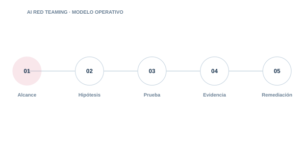

08 · PILAR
AI Red Teaming
Evaluar de forma controlada cómo puede fallar o ser abusado un sistema de IA.

Directorio del pilar6 guías · acceso directo
08.0108.0208.0308.0408.0508.06
Prompt Injection
Diseña pruebas seguras para inyección directa. indirecta y persistente.
Jailbreaks
Evalúa la resistencia de políticas. guardrails y moderación sin confundir seguridad con censura.
RAG Poisoning
Comprueba si contenido malicioso altera recuperación. decisiones o salidas.
Tool Abuse
Prueba abuso de parámetros. permisos. secuencias y efectos laterales.
MCP Supply Chain
Evalúa riesgos de servidores. cambios maliciosos y confianza en herramientas.
Exfiltración y Model Extraction
Mide la posibilidad de extraer datos. secretos. comportamiento o propiedad intelectual.
01
AlcanceControl y evidencia aplicable
02
HipótesisControl y evidencia aplicable
03
PruebaControl y evidencia aplicable
04
EvidenciaControl y evidencia aplicable
05
RemediaciónControl y evidencia aplicable
Cada guía incluye explicación, implantación, controles, evidencias, errores habituales, métricas y referencias.